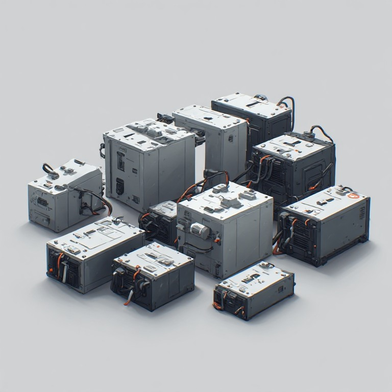
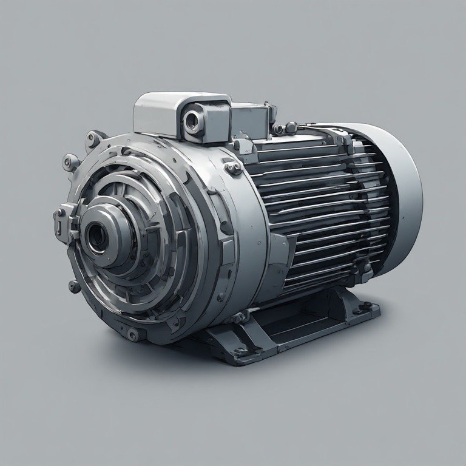
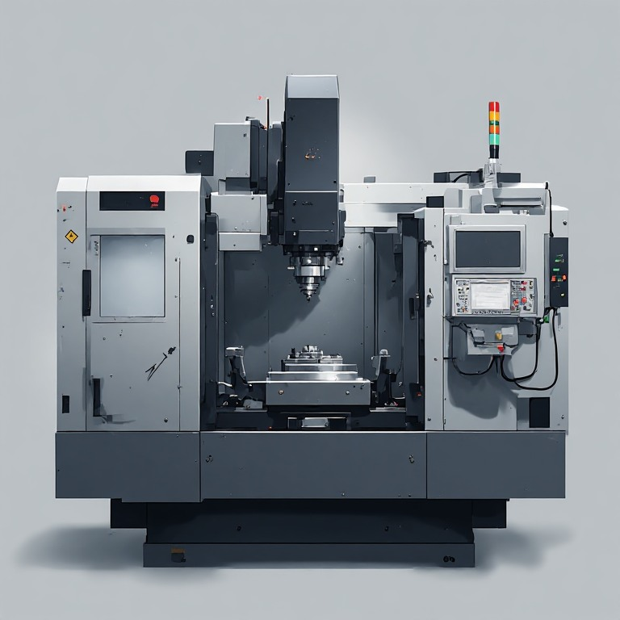

Find a business partner you can trust.
🌏 Doing Business With China
💭 I can find a supplier.
>
💭 I can find a factory.
>
💭 I can find a product.
>
💭 I can get a quotation.
>
💭 I can send messages.
>
💭 I can order samples.
>
💭 I can even make a payment.
>
💭 But can I find a business partner I can actually trust?
🧠 Everything Looks Fine
💭 The company has a website.
💭 The salesperson responds quickly.
💭 The product photos look professional.
💭 The quotation looks reasonable.
💭 The supplier says they are a manufacturer.
💭 They sent me factory photos.
💭 They sent me videos.
💭 They sent me certificates.
💭 They answered my questions.
💭 They sent me a sample.
💭 The sample looks good.
💭 We agreed on the price.
💭 We agreed on the specifications.
💭 We agreed on the delivery date.
💭 Everything seems normal.
And yet I still have one question:
💭 **What exactly do I know, and what am I simply assuming?**
🔎 What Have I Actually Verified?
💭 I verified that the company exists.
💭 But did I verify that the company I found is the company I am actually dealing with?
💭 I verified the salesperson.
💭 But does that person actually represent the company?
💭 I verified the company name.
💭 Does the payment account belong to the same company?
💭 I verified the factory address.
💭 Is that really where my products will be manufactured?
💭 I verified the supplier.
💭 Is the supplier actually the manufacturer?
💭 Or is it a trading company?
💭 An agent?
💭 Another intermediary?
💭 I saw a factory.
💭 But was it really the factory producing my order?
💭 I saw a production line.
💭 But was my product actually being produced there?
💭 I received documents.
💭 Do those documents actually apply to my exact product?
💭 I received certificates.
💭 Are they current?
💭 Are they relevant?
💭 Are they connected to the product I am buying?
💭 I found positive information online.
💭 But what information am I not seeing?
🏭 Is This Really My Factory?

💭 The supplier says, "We are the factory."
💭 How do I independently verify that?
💭 How much of the production is actually done in-house?
💭 Which parts are outsourced?
💭 Who makes the critical components?
💭 Who controls production?
💭 Who controls quality?
💭 Who owns the machinery?
💭 Who owns the tooling?
💭 Where will my order actually be produced?
💭 Can the factory really handle my order volume?
💭 Can they produce 100 units?
💭 Can they produce 1,000 units?
💭 Can they produce 10,000 units?
💭 What happens when my order becomes larger?
💭 Will I still receive the same attention and quality?
💭 What happens if production is moved somewhere else?
💭 What happens if another factory becomes involved?
💭 What happens if I cannot physically visit the factory myself?
📋 I Don't Just Need a Supplier
💭 I need the right supplier for my product.
💭 I need a supplier that understands my specifications.
💭 I need a supplier that can meet my required quality.
💭 I need a supplier that can meet my required quantity.
💭 I need a supplier that can meet my deadline.
💭 I need a supplier whose production capability matches my requirements.
💭 I need a supplier whose business model makes sense for my order size.
💭 I need to know whether I am talking to the manufacturer or another layer in the supply chain.
💭 I don't want to choose a supplier simply because their website looks better.
💭 I don't want to choose a supplier simply because their price is lower.
💭 I don't want to choose a supplier simply because someone online recommended them.
💭 I want evidence that is relevant to my actual order.
💰 The Cheapest Price Is Not Always the Cheapest Order
💭 One supplier quoted $1.20.
💭 Another quoted $1.80.
💭 Another quoted $3.40.
💭 Why are they so different?
💭 Are they quoting the same material?
💭 Are they quoting the same dimensions?
💭 Are they quoting the same components?
💭 Are they quoting the same packaging?
💭 Are they including the same services?
💭 Are they using the same production process?
💭 Is tooling included?
💭 Is inspection included?
💭 Is domestic transportation included?
💭 Is international transportation included?
💭 Are duties included?
💭 Are taxes included?
💭 Are customs charges included?
💭 What will the product actually cost when it reaches my warehouse?
🧮 I Need the Real Cost
💭 I don't just want the factory price.
💭 I want to understand my landed cost.
💭 I want to know what I will actually pay.
💭 I want to know which costs are included.
💭 I want to know which costs are excluded.
💭 I want to know which costs can change.
💭 I want to know which costs I am responsible for.
💭 I want to know which costs the supplier is responsible for.
💭 I want to know whether a $10,000 order can become a $13,000 order after everything is included.
💭 I don't want to discover the real cost after the shipment has already left China.
📦 I Don't Want to Buy Inventory I Don't Need
💭 The supplier wants an MOQ of 10,000 units.
💭 I only need 1,000.
💭 I don't want to spend money on 9,000 units I cannot sell.
💭 Is the MOQ genuinely fixed?
💭 Could another factory accept a smaller order?
💭 Could another production method reduce the MOQ?
💭 Should I negotiate?
💭 Should I find another factory?
💭 What will my real inventory risk be?
🧪 I Need a Sample
💭 I want to see the product before I place a large order.
💭 I want to know exactly what I am approving.
💭 I want the sample to represent the actual production process.
💭 I want the materials to be the same.
💭 I want the dimensions to be the same.
💭 I want the components to be the same.
💭 I want the packaging to be the same.
💭 I want the finishing to be the same.
💭 I want the production version to match what I approved.
⚠️ The Sample Is Good. Now I Am More Concerned.
💭 The sample looks perfect.
💭 But one good sample only proves that one good sample exists.
💭 What guarantees that 5,000 units will be consistent?
💭 What happens if the factory changes the material?
💭 What happens if a component becomes unavailable?
💭 What happens if production is outsourced?
💭 What happens if a different worker produces the next batch?
💭 What happens if the factory considers a small difference acceptable?
💭 What exactly defines "the same product"?
💭 What exactly defines "acceptable quality"?
📐 I Need My Specifications to Mean the Same Thing to Everyone
💭 I have drawings.
💭 I have dimensions.
💭 I have technical requirements.
💭 I have reference photos.
💭 I have material requirements.
💭 I have packaging requirements.
💭 I have quality requirements.
💭 I have tolerances.
💭 I have details that matter.
💭 I need the factory to understand all of them.
💭 I need the salesperson to understand them.
💭 I need production to understand them.
💭 I need inspection to understand them.
💭 I need the final specification to be clear enough that nobody can reinterpret it later.
🌐 Language Is Not the Same as Understanding
💭 We can communicate in English.
💭 That doesn't necessarily mean we understand the same thing.
💭 The supplier replied, "OK."
💭 Does "OK" mean they understood everything?
💭 Does "OK" mean they can manufacture it?
💭 Does "OK" mean they agree with every specification?
💭 Does "OK" simply mean they want to continue the conversation?
💭 I don't want a translation that sounds correct but changes the meaning.
💭 I need technical communication to survive translation, negotiation, production, and inspection.
💭 I need important details to remain clear when communication moves between languages.
💳 The Moment Before I Pay

💭 The sample is approved.
💭 The quotation is accepted.
💭 The contract is ready.
💭 The supplier is waiting for my deposit.
💭 Maybe the order is $2,000.
💭 Maybe it is $20,000.
💭 Maybe it is $200,000.
💭 The larger the number becomes, the more I want to know exactly what I am verifying.
💭 Who exactly am I paying?
💭 Why am I paying this account?
💭 Does the account belong to the company?
💭 Does the company name match the contract?
💭 Does the beneficiary make sense?
💭 Is anything unusual about the payment instructions?
💭 What evidence should I keep before the money leaves my account?
🚨 The Bank Details Changed
💭 The supplier suddenly sent me a new bank account.
💭 They said the previous account cannot receive the payment anymore.
💭 They said the change is urgent.
💭 They asked me to use another account.
💭 Maybe there is a perfectly legitimate explanation.
💭 But how do I independently verify the change?
💭 Who should confirm it?
💭 What if the person sending the new information is not actually the person I think they are?
💭 I don't want to discover the problem after the transfer is complete.
📄 I Need to Understand the Contract
💭 What exactly am I buying?
💭 What exactly is the supplier promising?
💭 What happens if production is late?
💭 What happens if the goods fail inspection?
💭 What happens if the specifications are not followed?
💭 What happens if the quantity is wrong?
💭 What happens if the packaging is wrong?
💭 What happens if the supplier changes a component?
💭 What happens if the supplier cannot complete the order?
💭 What happens if something goes wrong after I have paid the deposit?
🧰 I Am Paying for Tooling
💭 The factory wants $2,000 for a mold.
💭 Maybe the tooling costs $10,000.
💭 Who owns it after I pay?
💭 Where is it stored?
💭 Can I move it to another factory?
💭 Can the factory use it for someone else?
💭 What happens if I stop working with this supplier?
💭 I don't want to pay for something that I cannot actually control.
🧠 I Have My Own Product Idea
💭 I have a design.
💭 I have drawings.
💭 I have technical files.
💭 I have a product concept.
💭 I need a factory to manufacture it.
💭 How much information should I disclose?
💭 How should I protect the design?
💭 Who owns the tooling?
💭 Who owns the drawings?
💭 Who owns the production files?
💭 What happens if I change factories later?
💭 I don't want my product to become someone else's product.
🏭 Production Has Started
💭 The supplier says production has started.
💭 I am thousands of kilometers away.
💭 I cannot see the production line.
💭 I cannot walk into the factory.
💭 I cannot check the raw materials myself.
💭 I cannot count the finished goods myself.
💭 I cannot see whether production is on schedule.
💭 I cannot know whether everything is being made according to the approved specification.
💭 I can ask for photos.
💭 I can ask for videos.
💭 But I still have to decide what evidence is enough.
⏱️ My Deadline Is Real
💭 The supplier says production will take 20 days.
💭 I have a launch date.
💭 I have customers waiting.
💭 I have advertising scheduled.
💭 I have inventory planning based on that date.
💭 What happens if production takes 27 days?
💭 What happens if it takes 35 days?
💭 What happens if the factory rushes the order to meet the deadline?
💭 I don't want a faster shipment to create a quality problem.
🔬 I Need Independent Inspection
💭 The factory says the order is finished.
💭 They want the balance payment.
💭 The goods are still in China.
💭 I am still outside China.
💭 I haven't physically seen the finished order.
💭 Who counted the cartons?
💭 Who checked the quantity?
💭 Who checked the dimensions?
💭 Who checked the materials?
💭 Who checked the packaging?
💭 Who checked for visible defects?
💭 Who compared the goods with my approved specification?
💭 What evidence do I actually have?
📸 I Don't Need More Marketing Photos
💭 I don't need another beautiful factory presentation.
💭 I need to see my actual order.
💭 I need photographs of the actual goods.
💭 I need photographs of the actual cartons.
💭 I need evidence of the actual quantity.
💭 I need evidence of the actual inspection.
💭 I need someone to look at what I asked them to look at.
📦 What If the Quantity Is Wrong?
💭 I ordered 5,000 units.
💭 Did 5,000 units actually leave the factory?
💭 How many cartons are there?
💭 How many units are inside each carton?
💭 Are there damaged units?
💭 Are there missing units?
💭 Are there mixed products?
💭 Are there mixed specifications?
💭 I don't want to discover a quantity problem after the shipment arrives.
🧪 What If the Quality Changed?
💭 The sample was approved.
💭 The production version looks similar.
💭 But is it actually the same?
💭 Is the material the same?
💭 Is the thickness the same?
💭 Is the color the same?
💭 Is the component the same?
💭 Is the finish the same?
💭 Is the packaging the same?
💭 Is the performance the same?
💭 How do I know?
🚢 Shipping Is Not Just Shipping
💭 The goods are ready.
💭 Now I need to move them from China to my country.
💭 Which shipping method makes sense?
💭 Who is responsible for the shipment?
💭 Who handles the export process?
💭 Who handles the import process?
💭 Who pays which charges?
💭 Which documents do I need?
💭 Which documents will the supplier provide?
💭 What happens if the shipment is delayed?
💭 What happens if something is damaged?
💭 What happens if the declared information creates a problem?
🚚 DDP Sounds Simple
💭 The supplier says, "We can ship DDP."
💭 That sounds convenient.
💭 But what exactly does DDP mean for my particular shipment?
💭 Who handles customs?
💭 Who is responsible for the import process?
💭 Who pays duties and taxes?
💭 What documents will I receive?
💭 What information will be declared?
💭 What happens if customs asks questions?
💭 What happens if an unexpected charge appears?
💭 What happens if the shipment is delayed?
💭 I want convenience.
💭 But I don't want convenience to mean that I lose visibility.
🚢 EXW / FOB / CIF / DAP / DDP
💭 I know these terms exist.
💭 But I want to know what they mean for my actual order.
💭 Where does my responsibility begin?
💭 Where does the supplier's responsibility end?
💭 Who pays for what?
💭 Who handles what?
💭 Who takes responsibility when something goes wrong?
💭 I don't want to learn the difference after my shipment has already started moving.
🧾 I Need the Documents to Match Reality
💭 I received a commercial invoice.
💭 I received a packing list.
💭 I received shipping documents.
💭 I received certificates.
💭 I received a test report.
💭 The documents look professional.
💭 But do the documents describe the actual goods?
💭 Is the quantity correct?
💭 Is the product description correct?
💭 Is the declared value correct?
💭 Is the classification appropriate?
💭 Do the documents belong to my exact product?
💭 I don't want a paperwork problem to become a shipment problem.
🌍 Customs Is Now My Problem
💭 I know what I ordered.
💭 I don't necessarily know how my country will classify it.
💭 I don't know what duties may apply.
💭 I don't know what taxes may apply.
💭 I don't know whether additional documents are required.
💭 I don't know whether the supplier's shipping arrangement solves my import requirements.
💭 I don't want my goods sitting somewhere because I didn't know what document was required.
📜 I Need Certifications
💭 The supplier says the product is certified.
💭 They sent me a certificate.
💭 Does it apply to my exact product?
💭 Does it apply to my exact model?
💭 Is it current?
💭 Was the tested product actually manufactured by the supplier?
💭 Does the document satisfy the requirements of my market?
💭 What happens if I discover a compliance problem after producing 5,000 units?
🔗 I Want to Understand the Supply Chain
💭 I know my supplier.
💭 But who supplies my supplier?
💭 Which components are outsourced?
💭 Where do critical materials come from?
💭 Can another factory suddenly become involved?
💭 What happens if an upstream supplier changes?
💭 What happens if an important component becomes unavailable?
💭 How much of my supply chain can I actually see?
🚨 Something Changed
💭 The price changed.
💭 The production date changed.
💭 The material changed.
💭 The payment account changed.
💭 The packaging changed.
💭 The shipping method changed.
💭 The contact person changed.
💭 The factory address changed.
💭 The supplier says everything is normal.
💭 Maybe it is.
💭 But I need to know what changed, why it changed, and whether it affects my order.
📞 The Supplier Stopped Responding
💭 Everything was going well.
💭 Then replies became slower.
💭 Then communication became inconsistent.
💭 Then someone stopped responding.
💭 I already spent weeks on this order.
💭 I may already have paid for samples.
💭 I may already have paid a deposit.
💭 I don't know what happened.
💭 I don't know whether I should wait.
💭 I don't know whether I should find another contact.
💭 I don't know whether someone should visit the company.
💭 I don't know what I can realistically do from another country.
⚠️ Something Is Wrong With My Order
💭 The goods arrived.
💭 They are not exactly what I expected.
💭 The quantity is wrong.
💭 The quality is different.
💭 The packaging is damaged.
💭 The specifications were not followed.
💭 The supplier says the difference is normal.
💭 I don't agree.
💭 I need evidence.
💭 I need to understand what happened.
💭 I need someone who can investigate locally.
🧭 I Don't Know What I Don't Know
💭 This is my first time importing from China.
💭 I don't know which questions experienced buyers normally ask.
💭 I don't know which details are critical.
💭 I don't know which details are negotiable.
💭 I don't know which warning signs matter.
💭 I don't know what I should verify before paying.
💭 I don't know what I should document before production.
💭 I don't know what I should inspect before shipment.
💭 I don't want to learn everything by making an expensive mistake.
🤖 AI Can Find Information
💭 AI can find suppliers.
💭 AI can compare companies.
💭 AI can translate messages.
💭 AI can analyze documents.
💭 AI can summarize quotations.
💭 AI can tell me what questions to ask.
💭 But can AI physically visit the factory?
💭 Can AI open the carton?
💭 Can AI count the goods?
💭 Can AI inspect the warehouse?
💭 Can AI verify what is physically happening?
💭 Information is useful.
💭 Evidence is different.
🕳️ The Invisible Gap
There is a gap between what I can see from another country
and what is actually happening in China.
💭 I can see the website.
💭 I can see the quotation.
💭 I can see the product photos.
💭 I can talk to the salesperson.
💭 I can receive a sample.
💭 I can receive a tracking number.
But I cannot automatically see:
💭 what is happening inside the factory.
💭 who is actually producing my order.
💭 whether the materials are correct.
💭 whether production matches the approved sample.
💭 whether the quantity is correct.
💭 whether the cartons contain what I ordered.
💭 whether a document matches reality.
💭 whether something changed after approval.
💭 whether the warehouse contains what I was told it contains.
💭 whether a local problem has already developed before I hear about it.
🌏 The Problem With Distance

💭 I am not in China.
💭 My supplier is in China.
💭 My factory is in China.
💭 My warehouse is in China.
💭 My shipment starts in China.
💭 The people who can physically check these things are in China.
💭 I can send messages.
💭 I can make calls.
💭 I can use video.
💭 I can use AI.
💭 But sometimes I need someone who can actually go there.
🚗 Sometimes I Don't Need a Huge Sourcing Operation
💭 Maybe I don't need someone to manage my entire procurement process.
💭 Maybe I only need someone to verify one supplier.
💭 Maybe I only need someone to visit one factory.
💭 Maybe I only need someone to inspect one order.
💭 Maybe I only need someone to check one warehouse.
💭 Maybe I only need someone to receive something.
💭 Maybe I only need someone to deliver something.
💭 Maybe I only need someone to make a local phone call.
💭 Maybe I only need someone to speak to a Chinese company face to face.
💭 Maybe I only need someone to check one thing that I cannot check from another country.
🧩 What I May Need
| Situation | What I may actually need |
| :- | :- |
| 🔎 Supplier verification | Someone to investigate and verify a company |
| 🏭 Factory verification | Someone to visit and confirm what is actually there |
| 📸 Local evidence | Someone to photograph or record a specific situation |
| 🔬 Product inspection | Someone to inspect goods before shipment |
| 📦 Quantity verification | Someone to check cartons, units, labels, and packaging |
| 🧪 Sample verification | Someone to compare actual goods against requirements |
| 🏢 Warehouse check | Someone to verify what is physically stored |
| 📞 Local communication | Someone to communicate directly with a Chinese company |
| 🗣️ Business communication | Someone who understands the local business context |
| 🚗 Local pickup | Someone to receive or collect something |
| 🚚 Local delivery | Someone to deliver something locally |
| 🧾 Document assistance | Someone to help check or coordinate local documentation |
| 💳 Payment verification | Someone to help verify information before payment |
| 🛠️ Local problem solving | Someone to investigate a problem on the ground |
| 🔄 Supplier transition | Someone to help coordinate a change of supplier |
| 🧰 Tooling / samples | Someone to help locate, receive, inspect, or coordinate physical items |
| 🌏 Other China-related tasks | Someone to determine whether the problem can be solved locally |
🧠 Before I Trust a Supplier
💭 Who exactly am I buying from?
💭 Who exactly am I paying?
💭 Is this really the factory?
💭 Where will my product actually be manufactured?
💭 Who controls production?
💭 What is produced in-house?
💭 What is outsourced?
💭 What exactly did I approve?
💭 What exactly will be inspected?
💭 What happens if production differs from the sample?
💭 What happens if the quantity is wrong?
💭 What happens if the supplier misses the deadline?
💭 What happens if the payment details change?
💭 What happens if the shipment is delayed?
💭 What happens if customs asks questions?
💭 What evidence will I have?
💭 Who can physically verify something for me?
💳 Before I Send the Money
Stop for a moment.
💭 Do I know exactly who I am buying from?
💭 Do I know where my product will actually be manufactured?
💭 Do I have the specifications in writing?
💭 Do I know what makes the bulk production acceptable?
💭 Do I know what happens if production does not match the approved sample?
💭 Do I know who will inspect the goods?
💭 Do I know what evidence I will receive?
💭 Do I understand the shipping terms?
💭 Do I understand what is included in the quotation?
💭 Do I understand who is responsible for customs?
💭 Do I know exactly where my payment is going?
💭 If the bank details change, do I know how to verify the change?
💭 If something goes wrong tomorrow, can I prove what was agreed today?
⏳ The Cost of Finding Out Too Late
💭 Maybe nothing is wrong.
💭 That is possible.
💭 But when should I find out?
Before payment?
Before production?
Before mass production?
Before inspection?
Before shipment?
After customs?
After delivery?
After my customers receive the product?
💭 I don't want to discover a problem at the most expensive possible stage.
📦 The Scale Changes Everything
💭 50 units is one thing.
💭 500 units is different.
💭 5,000 units is different again.
💭 20,000 units sitting in a warehouse is no longer a small mistake.
💭 2,000 kg of the wrong product is not a simple inconvenience.
💭 A container full of goods that cannot be sold is not just a quality issue.
💭 A delayed shipment can become a stockout.
💭 A specification mistake can become thousands of defective units.
💭 A small misunderstanding can become a very large problem when multiplied by quantity.
🔄 The Real Journey
I have a product
↓
I need a supplier
↓
I find too many suppliers
↓
I shortlist them
↓
I verify the company
↓
I verify the factory
↓
I request quotations
↓
I compare the real cost
↓
I discuss specifications
↓
I order a sample
↓
I approve the sample
↓
I negotiate the order
↓
I review the agreement
↓
I verify payment details
↓
I pay the deposit
↓
Production begins
↓
I need visibility
↓
I inspect the goods
↓
I approve shipment
↓
The goods leave China
↓
Customs / logistics
↓
The goods arrive
↓
Something changes
↓
I need evidence
↓
I need someone in China